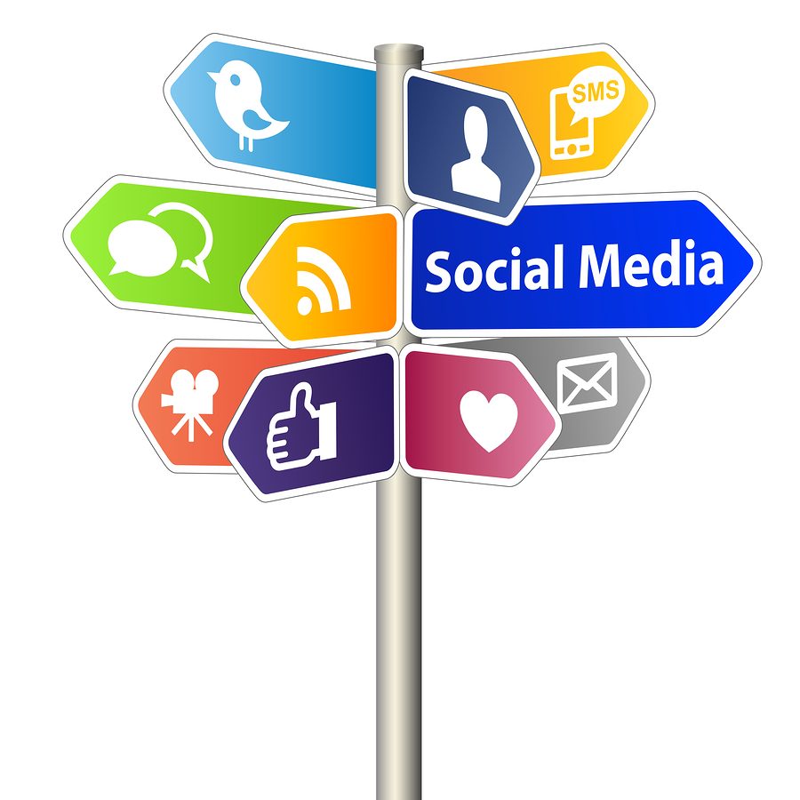
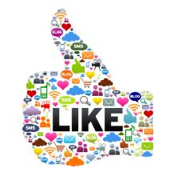

Teaching Point:
Today we will learn how to use Online Tools safely.
Online Tools
 Brainpop Jr. Internet Safety Video
There are many free tools that we use online. We can use email and Instant Messaging to talk to peopel we know, and we can use Social Tools like Facebook and Twitter to talk to many people at once, even people in other parts of the world. But sometimes people we don't know try to send things to us in our accounts that can be harmful to us or to our computer. To make sure this doesn't happen:
- Always ask your parents permission to register for an email or social account.
- Keep your password a secret from everyone. Even your friends don't need to know your password. If someone keeps asking you for your password even after you tell them you want to keep it a secret, they are not your real friend.
- If you get an email from someone you don't know, delete it. It may have a virus that could break your computer.
- Always tell your parents if someone online says or does anything that makes you uncomfortable.
Today's Assignment
Use Kid Pix to make a poster about Online Tools for our Slideshow. The best 3 posters will be on this webpage:) Save it on your DESKTOP as Your Name + OT. When you are done, Export it to your Desktop.
Extension Activity
Go on your friends blogs and leave them comments about their work.
Click Here to go the Class Blogs Page
Back to School Portal